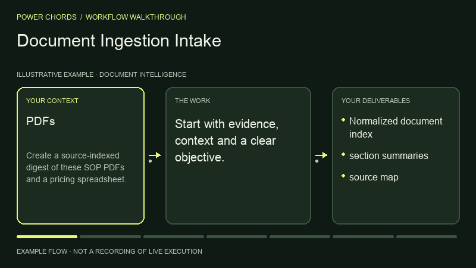

Document Intelligence · BY POWER CHORDS
Document Ingestion Intake
Normalize mixed-format documents.
Your context. A result to review.
- Published by
- Power Chords
- Use with
- Codex workspace
Run in your local Codex workspace, or use the instructions with another equipped agent. Review results before acting. - Bring it to
- Claude Code · Codex · Cursor · Gemini CLI · other agents via Markdown
- Result
- Normalized document index
This week’s update
Reviewed this week. No change to this skill’s workflow or operating guidance.
Compared with the last published version. Earlier entries are dated reviews, not deployment records.
Earlier weekly reviews
Added guidance to check document paths and audio length before processing, with clearer recovery steps when supporting media is missing.
SEE THE PROCESS
From context to normalized document index.
An illustrated example of the workflow.

THE WORK, DEFINED
Inputs and outputs
What you bring
- PDFs
- spreadsheets
- text files
- contracts
- authorized document access
What to review
- Normalized document index
- section summaries
- source map
WORKFLOW DIAGRAM
How Intake works.
Fill gaps in evidence or access before continuing.
- INPUT
PDFs · spreadsheets · text files · contracts · authorized document access
- STEP 01
Inventory files and provenance
- STEP 02
Extract accessible text and structure
- STEP 03
Normalize sections and metadata
- STEP 04
Preserve source references and version dates
- STEP 05
Flag inaccessible scanned or password-protected files
- REVIEW
Never imply unsupported files were read; verify extraction completeness
- OUTPUT
Normalized document index · section summaries · source map
Your approval → Review the work before publishing, sending, deploying or changing external systems.
TRY IT WITH YOUR CONTEXT
One prompt. Your agent.
Add your task and inputs. Your agent needs these instructions and the right tools.
Use Power Chords Document Ingestion Intake. Create a source-indexed digest of these SOP PDFs and a pricing spreadsheet. Return Normalized document index, section summaries, source map. Show supporting evidence, assumptions, validation and next actions. Ask for my approval before any external write or publication.
FINISH WITH CONFIDENCE
What a good result needs.
- The outputs match your brief.
- Claims have sources. Assumptions and gaps are labelled.
- Never imply unsupported files were read; verify extraction completeness.
- Tool results come from real execution.